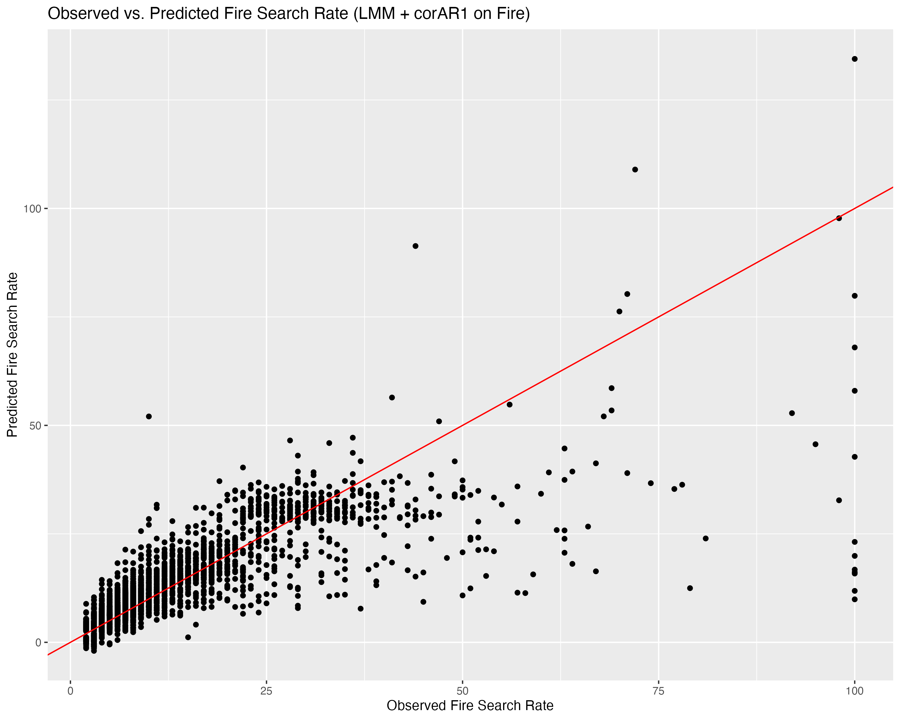
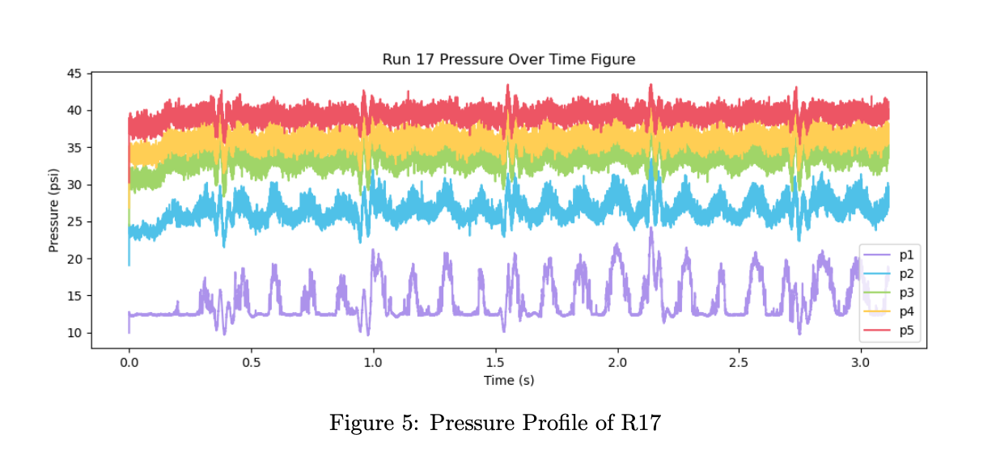
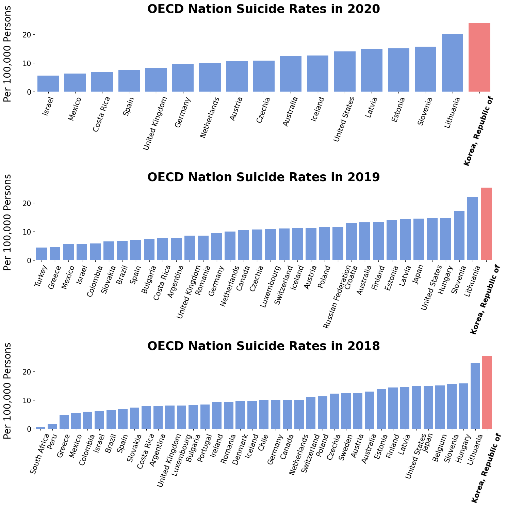
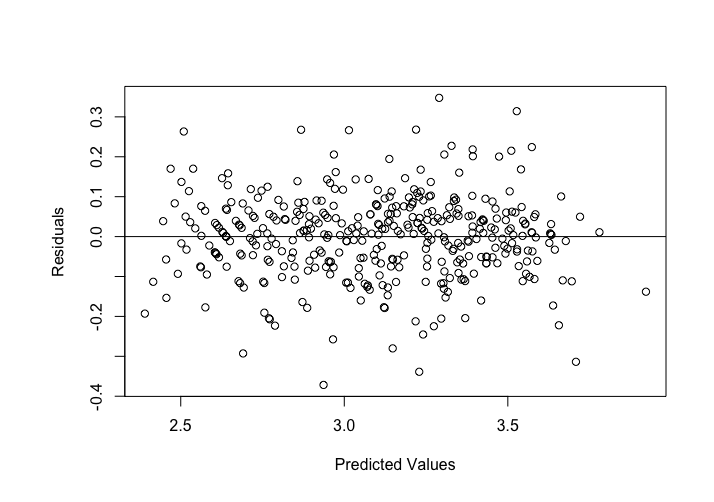
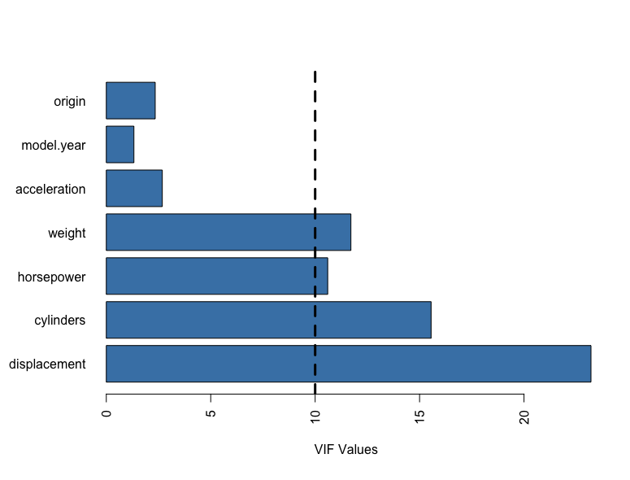
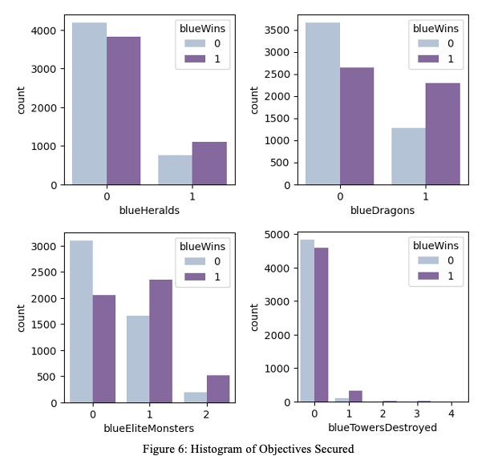

Data Science Projects
Computer Vision in Ecology
Applied object detection to efficiently count migratory birds in aerial images of the Platte River of Nebraska.

Google Search Analysis:
Wildfire Behavior
Carried out data analysis and collection to better understand exposures and behavioral responses to wildfire smoke by forecasting Google search rates of ten public health associated keywords.

ML in Hypersonic Vehicles:
Predicting STLE
Designed and trained a deep neural network architecture for predicting the Shock Train Leading Edge (STLE) of hypersonic vehicles – a direct interest of the NASA Langley Center.


Data Visualization:
World Happiness Score Report
The World Happiness Report Project analyzes the happiness scores across the globe, and visualizes the trend involved throughout the years of 2005 to 2021. Additional case-study and regression analysis is conducted as well.

Regression Analysis:
Modeling Automobile
Fuel Efficiency
Surveys methods of regression such as variable selection/transformation, hypothesis testing, and cross-validation.


League of Legends:
Victory Prediction Using ML
This project focusses on predicting High Elo (Diamond Ranked) League of Legends game results only looking at its first 10 minutes.
